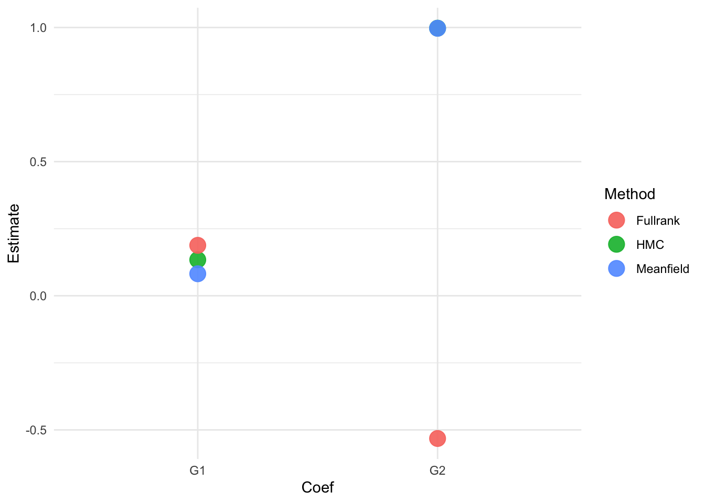

library(brms)
library(ggplot2)
library(tidyr)
library(dplyr)
set.seed(07082023)Non-MCMC methods
This document illustrates using different approximators in Stan, which is the program underlying various R-packages for Bayesian analysis, including brms.
Preliminaries
An example: Predicting students’ math performance.
To illustrate Bayesian convergence and checks, we will use a data set that is available from the UCI Machine Learning repository. The data set we use can be downloaded here and contains two data sets and a merged file. We will use the “student-mat.csv” file.
We will use linear regression analysis to predict the final math grade of Portugese students in secondary schools. First, we load in the data. Make sure the data is saved in your current working directory or change the path to the data in the code below.
dat <- read.table("student-mat.csv", sep = ";", header = TRUE)
head(dat) school sex age address famsize Pstatus Medu Fedu Mjob Fjob reason
1 GP F 18 U GT3 A 4 4 at_home teacher course
2 GP F 17 U GT3 T 1 1 at_home other course
3 GP F 15 U LE3 T 1 1 at_home other other
4 GP F 15 U GT3 T 4 2 health services home
5 GP F 16 U GT3 T 3 3 other other home
6 GP M 16 U LE3 T 4 3 services other reputation
guardian traveltime studytime failures schoolsup famsup paid activities
1 mother 2 2 0 yes no no no
2 father 1 2 0 no yes no no
3 mother 1 2 3 yes no yes no
4 mother 1 3 0 no yes yes yes
5 father 1 2 0 no yes yes no
6 mother 1 2 0 no yes yes yes
nursery higher internet romantic famrel freetime goout Dalc Walc health
1 yes yes no no 4 3 4 1 1 3
2 no yes yes no 5 3 3 1 1 3
3 yes yes yes no 4 3 2 2 3 3
4 yes yes yes yes 3 2 2 1 1 5
5 yes yes no no 4 3 2 1 2 5
6 yes yes yes no 5 4 2 1 2 5
absences G1 G2 G3
1 6 5 6 6
2 4 5 5 6
3 10 7 8 10
4 2 15 14 15
5 4 6 10 10
6 10 15 15 15We will predict the math grade at the third period G3 based on all other available data and we will use a horseshoe prior to help induce some sparsity. This is a shrinkage priors that attamps to (mainly) shrink non-important predictors, for more information on the prior see 1 2.
start_time <- Sys.time()
hs_prior <- set_prior(horseshoe(df = 3)) # select prior
fit1 <- brm(G3 ~ ., data = dat, algorithm = "sampling", prior = hs_prior, seed = 123)Compiling Stan program...Trying to compile a simple C fileRunning /Library/Frameworks/R.framework/Resources/bin/R CMD SHLIB foo.c
using C compiler: ‘Apple clang version 16.0.0 (clang-1600.0.26.6)’
using SDK: ‘MacOSX15.2.sdk’
clang -arch arm64 -I"/Library/Frameworks/R.framework/Resources/include" -DNDEBUG -I"/Users/4243579/Library/R/arm64/4.4/library/Rcpp/include/" -I"/Library/Frameworks/R.framework/Versions/4.4-arm64/Resources/library/RcppEigen/include/" -I"/Library/Frameworks/R.framework/Versions/4.4-arm64/Resources/library/RcppEigen/include/unsupported" -I"/Users/4243579/Library/R/arm64/4.4/library/BH/include" -I"/Users/4243579/Library/R/arm64/4.4/library/StanHeaders/include/src/" -I"/Users/4243579/Library/R/arm64/4.4/library/StanHeaders/include/" -I"/Users/4243579/Library/R/arm64/4.4/library/RcppParallel/include/" -I"/Users/4243579/Library/R/arm64/4.4/library/rstan/include" -DEIGEN_NO_DEBUG -DBOOST_DISABLE_ASSERTS -DBOOST_PENDING_INTEGER_LOG2_HPP -DSTAN_THREADS -DUSE_STANC3 -DSTRICT_R_HEADERS -DBOOST_PHOENIX_NO_VARIADIC_EXPRESSION -D_HAS_AUTO_PTR_ETC=0 -include '/Users/4243579/Library/R/arm64/4.4/library/StanHeaders/include/stan/math/prim/fun/Eigen.hpp' -D_REENTRANT -DRCPP_PARALLEL_USE_TBB=1 -I/opt/R/arm64/include -fPIC -falign-functions=64 -Wall -g -O2 -c foo.c -o foo.o
In file included from <built-in>:1:
/Users/4243579/Library/R/arm64/4.4/library/StanHeaders/include/stan/math/prim/fun/Eigen.hpp:3:10: fatal error: 'stdexcept' file not found
3 | #include <stdexcept>
| ^~~~~~~~~~~
1 error generated.
make: *** [foo.o] Error 1Start sampling
SAMPLING FOR MODEL 'anon_model' NOW (CHAIN 1).
Chain 1:
Chain 1: Gradient evaluation took 4.8e-05 seconds
Chain 1: 1000 transitions using 10 leapfrog steps per transition would take 0.48 seconds.
Chain 1: Adjust your expectations accordingly!
Chain 1:
Chain 1:
Chain 1: Iteration: 1 / 2000 [ 0%] (Warmup)
Chain 1: Iteration: 200 / 2000 [ 10%] (Warmup)
Chain 1: Iteration: 400 / 2000 [ 20%] (Warmup)
Chain 1: Iteration: 600 / 2000 [ 30%] (Warmup)
Chain 1: Iteration: 800 / 2000 [ 40%] (Warmup)
Chain 1: Iteration: 1000 / 2000 [ 50%] (Warmup)
Chain 1: Iteration: 1001 / 2000 [ 50%] (Sampling)
Chain 1: Iteration: 1200 / 2000 [ 60%] (Sampling)
Chain 1: Iteration: 1400 / 2000 [ 70%] (Sampling)
Chain 1: Iteration: 1600 / 2000 [ 80%] (Sampling)
Chain 1: Iteration: 1800 / 2000 [ 90%] (Sampling)
Chain 1: Iteration: 2000 / 2000 [100%] (Sampling)
Chain 1:
Chain 1: Elapsed Time: 1.418 seconds (Warm-up)
Chain 1: 1.276 seconds (Sampling)
Chain 1: 2.694 seconds (Total)
Chain 1:
SAMPLING FOR MODEL 'anon_model' NOW (CHAIN 2).
Chain 2:
Chain 2: Gradient evaluation took 1.2e-05 seconds
Chain 2: 1000 transitions using 10 leapfrog steps per transition would take 0.12 seconds.
Chain 2: Adjust your expectations accordingly!
Chain 2:
Chain 2:
Chain 2: Iteration: 1 / 2000 [ 0%] (Warmup)
Chain 2: Iteration: 200 / 2000 [ 10%] (Warmup)
Chain 2: Iteration: 400 / 2000 [ 20%] (Warmup)
Chain 2: Iteration: 600 / 2000 [ 30%] (Warmup)
Chain 2: Iteration: 800 / 2000 [ 40%] (Warmup)
Chain 2: Iteration: 1000 / 2000 [ 50%] (Warmup)
Chain 2: Iteration: 1001 / 2000 [ 50%] (Sampling)
Chain 2: Iteration: 1200 / 2000 [ 60%] (Sampling)
Chain 2: Iteration: 1400 / 2000 [ 70%] (Sampling)
Chain 2: Iteration: 1600 / 2000 [ 80%] (Sampling)
Chain 2: Iteration: 1800 / 2000 [ 90%] (Sampling)
Chain 2: Iteration: 2000 / 2000 [100%] (Sampling)
Chain 2:
Chain 2: Elapsed Time: 1.322 seconds (Warm-up)
Chain 2: 1.26 seconds (Sampling)
Chain 2: 2.582 seconds (Total)
Chain 2:
SAMPLING FOR MODEL 'anon_model' NOW (CHAIN 3).
Chain 3:
Chain 3: Gradient evaluation took 1.4e-05 seconds
Chain 3: 1000 transitions using 10 leapfrog steps per transition would take 0.14 seconds.
Chain 3: Adjust your expectations accordingly!
Chain 3:
Chain 3:
Chain 3: Iteration: 1 / 2000 [ 0%] (Warmup)
Chain 3: Iteration: 200 / 2000 [ 10%] (Warmup)
Chain 3: Iteration: 400 / 2000 [ 20%] (Warmup)
Chain 3: Iteration: 600 / 2000 [ 30%] (Warmup)
Chain 3: Iteration: 800 / 2000 [ 40%] (Warmup)
Chain 3: Iteration: 1000 / 2000 [ 50%] (Warmup)
Chain 3: Iteration: 1001 / 2000 [ 50%] (Sampling)
Chain 3: Iteration: 1200 / 2000 [ 60%] (Sampling)
Chain 3: Iteration: 1400 / 2000 [ 70%] (Sampling)
Chain 3: Iteration: 1600 / 2000 [ 80%] (Sampling)
Chain 3: Iteration: 1800 / 2000 [ 90%] (Sampling)
Chain 3: Iteration: 2000 / 2000 [100%] (Sampling)
Chain 3:
Chain 3: Elapsed Time: 1.381 seconds (Warm-up)
Chain 3: 1.243 seconds (Sampling)
Chain 3: 2.624 seconds (Total)
Chain 3:
SAMPLING FOR MODEL 'anon_model' NOW (CHAIN 4).
Chain 4:
Chain 4: Gradient evaluation took 1.1e-05 seconds
Chain 4: 1000 transitions using 10 leapfrog steps per transition would take 0.11 seconds.
Chain 4: Adjust your expectations accordingly!
Chain 4:
Chain 4:
Chain 4: Iteration: 1 / 2000 [ 0%] (Warmup)
Chain 4: Iteration: 200 / 2000 [ 10%] (Warmup)
Chain 4: Iteration: 400 / 2000 [ 20%] (Warmup)
Chain 4: Iteration: 600 / 2000 [ 30%] (Warmup)
Chain 4: Iteration: 800 / 2000 [ 40%] (Warmup)
Chain 4: Iteration: 1000 / 2000 [ 50%] (Warmup)
Chain 4: Iteration: 1001 / 2000 [ 50%] (Sampling)
Chain 4: Iteration: 1200 / 2000 [ 60%] (Sampling)
Chain 4: Iteration: 1400 / 2000 [ 70%] (Sampling)
Chain 4: Iteration: 1600 / 2000 [ 80%] (Sampling)
Chain 4: Iteration: 1800 / 2000 [ 90%] (Sampling)
Chain 4: Iteration: 2000 / 2000 [100%] (Sampling)
Chain 4:
Chain 4: Elapsed Time: 1.258 seconds (Warm-up)
Chain 4: 1.244 seconds (Sampling)
Chain 4: 2.502 seconds (Total)
Chain 4: Warning: There were 1 divergent transitions after warmup. See
https://mc-stan.org/misc/warnings.html#divergent-transitions-after-warmup
to find out why this is a problem and how to eliminate them.Warning: Examine the pairs() plot to diagnose sampling problemssummary(fit1)Warning: There were 1 divergent transitions after warmup. Increasing
adapt_delta above 0.8 may help. See
http://mc-stan.org/misc/warnings.html#divergent-transitions-after-warmup Family: gaussian
Links: mu = identity; sigma = identity
Formula: G3 ~ school + sex + age + address + famsize + Pstatus + Medu + Fedu + Mjob + Fjob + reason + guardian + traveltime + studytime + failures + schoolsup + famsup + paid + activities + nursery + higher + internet + romantic + famrel + freetime + goout + Dalc + Walc + health + absences + G1 + G2
Data: dat (Number of observations: 395)
Draws: 4 chains, each with iter = 2000; warmup = 1000; thin = 1;
total post-warmup draws = 4000
Regression Coefficients:
Estimate Est.Error l-95% CI u-95% CI Rhat Bulk_ESS Tail_ESS
Intercept -1.32 1.58 -4.16 1.81 1.00 2795 3093
schoolMS 0.05 0.15 -0.17 0.47 1.00 4372 3685
sexM 0.03 0.10 -0.15 0.29 1.00 5456 3820
age -0.11 0.08 -0.29 0.02 1.00 2318 2499
addressU -0.00 0.10 -0.24 0.22 1.00 6269 2893
famsizeLE3 0.01 0.10 -0.19 0.24 1.00 6386 3695
PstatusT -0.03 0.12 -0.32 0.21 1.00 5362 3372
Medu 0.02 0.07 -0.10 0.18 1.00 4354 3859
Fedu -0.02 0.07 -0.18 0.10 1.00 4633 3801
Mjobhealth -0.00 0.12 -0.27 0.26 1.00 5320 3420
Mjobother 0.01 0.10 -0.20 0.23 1.00 5611 3483
Mjobservices 0.01 0.10 -0.21 0.24 1.00 6025 3917
Mjobteacher 0.00 0.11 -0.25 0.26 1.00 6136 3788
Fjobhealth 0.05 0.16 -0.20 0.49 1.00 4676 2977
Fjobother 0.05 0.11 -0.14 0.34 1.00 4847 3504
Fjobservices -0.10 0.16 -0.50 0.12 1.00 3328 3289
Fjobteacher 0.01 0.13 -0.26 0.30 1.00 5565 3587
reasonhome -0.07 0.13 -0.40 0.11 1.00 4583 3732
reasonother 0.04 0.14 -0.19 0.42 1.00 4763 3637
reasonreputation 0.03 0.11 -0.17 0.30 1.00 5625 3587
guardianmother 0.06 0.12 -0.12 0.39 1.00 4559 3527
guardianother -0.03 0.14 -0.38 0.23 1.00 6006 3310
traveltime 0.04 0.09 -0.11 0.25 1.00 5423 3522
studytime -0.05 0.08 -0.24 0.08 1.00 5047 3481
failures -0.08 0.11 -0.35 0.08 1.00 3850 3304
schoolsupyes 0.08 0.16 -0.14 0.51 1.00 4214 3264
famsupyes 0.03 0.10 -0.16 0.27 1.00 5394 3489
paidyes 0.02 0.09 -0.16 0.26 1.00 5641 3506
activitiesyes -0.11 0.14 -0.46 0.08 1.00 3347 3267
nurseryyes -0.04 0.11 -0.33 0.15 1.00 5166 3694
higheryes 0.03 0.15 -0.25 0.43 1.00 4959 3579
internetyes -0.03 0.12 -0.33 0.18 1.00 5300 3386
romanticyes -0.09 0.14 -0.45 0.09 1.00 4108 4041
famrel 0.25 0.12 0.01 0.49 1.00 2079 1164
freetime 0.03 0.06 -0.09 0.17 1.00 4949 3516
goout 0.01 0.06 -0.10 0.14 1.00 5946 3553
Dalc -0.01 0.07 -0.18 0.13 1.00 5134 3623
Walc 0.05 0.07 -0.06 0.22 1.00 3225 3419
health 0.03 0.05 -0.06 0.15 1.00 4368 3824
absences 0.04 0.01 0.01 0.06 1.00 3262 2040
G1 0.13 0.06 0.01 0.25 1.00 2354 1397
G2 1.00 0.05 0.90 1.10 1.00 2490 2278
Further Distributional Parameters:
Estimate Est.Error l-95% CI u-95% CI Rhat Bulk_ESS Tail_ESS
sigma 1.88 0.07 1.75 2.02 1.00 5567 2832
Draws were sampled using sampling(NUTS). For each parameter, Bulk_ESS
and Tail_ESS are effective sample size measures, and Rhat is the potential
scale reduction factor on split chains (at convergence, Rhat = 1).end_time <- Sys.time()
runtime1 <- end_time - start_timeNote that here, we rely on the default prior distributions in brms.
Non-MCMC methods
By default brm using HMC, where the NUTS algorithms 3 is used to help with the sampling. In this case sampling is quite quick, but let’s say we are really busy and we want the model estimates even quicker.
In the mean field method in STAN independent Gaussian are assumed as the distributions for our latent variables in the unconstrained space. The last part might be a bit confusing, but imagine estimating a variance term with a Gaussian. We would run into the problem that there would be some density below zero, and this is impossible for a variance term. So, we could first transform the variable to become unconstrained (e.g., take the log) then estimate the Gaussian in the this unconstrained space and thus back-transform the parameter to the original space. See footnote 4 for more information.
start_time <- Sys.time()
fit2 <- brm(G3 ~ ., data = dat, algorithm = "meanfield", prior = hs_prior, seed = 123)Compiling Stan program...Trying to compile a simple C fileRunning /Library/Frameworks/R.framework/Resources/bin/R CMD SHLIB foo.c
using C compiler: ‘Apple clang version 16.0.0 (clang-1600.0.26.6)’
using SDK: ‘MacOSX15.2.sdk’
clang -arch arm64 -I"/Library/Frameworks/R.framework/Resources/include" -DNDEBUG -I"/Users/4243579/Library/R/arm64/4.4/library/Rcpp/include/" -I"/Library/Frameworks/R.framework/Versions/4.4-arm64/Resources/library/RcppEigen/include/" -I"/Library/Frameworks/R.framework/Versions/4.4-arm64/Resources/library/RcppEigen/include/unsupported" -I"/Users/4243579/Library/R/arm64/4.4/library/BH/include" -I"/Users/4243579/Library/R/arm64/4.4/library/StanHeaders/include/src/" -I"/Users/4243579/Library/R/arm64/4.4/library/StanHeaders/include/" -I"/Users/4243579/Library/R/arm64/4.4/library/RcppParallel/include/" -I"/Users/4243579/Library/R/arm64/4.4/library/rstan/include" -DEIGEN_NO_DEBUG -DBOOST_DISABLE_ASSERTS -DBOOST_PENDING_INTEGER_LOG2_HPP -DSTAN_THREADS -DUSE_STANC3 -DSTRICT_R_HEADERS -DBOOST_PHOENIX_NO_VARIADIC_EXPRESSION -D_HAS_AUTO_PTR_ETC=0 -include '/Users/4243579/Library/R/arm64/4.4/library/StanHeaders/include/stan/math/prim/fun/Eigen.hpp' -D_REENTRANT -DRCPP_PARALLEL_USE_TBB=1 -I/opt/R/arm64/include -fPIC -falign-functions=64 -Wall -g -O2 -c foo.c -o foo.o
In file included from <built-in>:1:
/Users/4243579/Library/R/arm64/4.4/library/StanHeaders/include/stan/math/prim/fun/Eigen.hpp:3:10: fatal error: 'stdexcept' file not found
3 | #include <stdexcept>
| ^~~~~~~~~~~
1 error generated.
make: *** [foo.o] Error 1Start samplingChain 1: ------------------------------------------------------------
Chain 1: EXPERIMENTAL ALGORITHM:
Chain 1: This procedure has not been thoroughly tested and may be unstable
Chain 1: or buggy. The interface is subject to change.
Chain 1: ------------------------------------------------------------
Chain 1:
Chain 1:
Chain 1:
Chain 1: Gradient evaluation took 4.9e-05 seconds
Chain 1: 1000 transitions using 10 leapfrog steps per transition would take 0.49 seconds.
Chain 1: Adjust your expectations accordingly!
Chain 1:
Chain 1:
Chain 1: Begin eta adaptation.
Chain 1: Iteration: 1 / 250 [ 0%] (Adaptation)
Chain 1: Iteration: 50 / 250 [ 20%] (Adaptation)
Chain 1: Iteration: 100 / 250 [ 40%] (Adaptation)
Chain 1: Iteration: 150 / 250 [ 60%] (Adaptation)
Chain 1: Iteration: 200 / 250 [ 80%] (Adaptation)
Chain 1: Success! Found best value [eta = 1] earlier than expected.
Chain 1:
Chain 1: Begin stochastic gradient ascent.
Chain 1: iter ELBO delta_ELBO_mean delta_ELBO_med notes
Chain 1: 100 -1465.769 1.000 1.000
Chain 1: 200 -954.727 0.768 1.000
Chain 1: 300 -877.914 0.311 0.535
Chain 1: 400 -902.521 0.057 0.087
Chain 1: 500 -864.152 0.036 0.044
Chain 1: 600 -890.797 0.037 0.044
Chain 1: 700 -859.211 0.033 0.037
Chain 1: 800 -857.468 0.019 0.037
Chain 1: 900 -857.828 0.001 0.002 MEAN ELBO CONVERGED MEDIAN ELBO CONVERGED
Chain 1:
Chain 1: Drawing a sample of size 1000 from the approximate posterior...
Chain 1: COMPLETED.Warning: Pareto k diagnostic value is 1.82. Resampling is disabled. Decreasing
tol_rel_obj may help if variational algorithm has terminated prematurely.
Otherwise consider using sampling instead.summary(fit2) Family: gaussian
Links: mu = identity; sigma = identity
Formula: G3 ~ school + sex + age + address + famsize + Pstatus + Medu + Fedu + Mjob + Fjob + reason + guardian + traveltime + studytime + failures + schoolsup + famsup + paid + activities + nursery + higher + internet + romantic + famrel + freetime + goout + Dalc + Walc + health + absences + G1 + G2
Data: dat (Number of observations: 395)
Draws: 1 chains, each with iter = 1000; warmup = 0; thin = 1;
total post-warmup draws = 1000
Regression Coefficients:
Estimate Est.Error l-95% CI u-95% CI Rhat Bulk_ESS Tail_ESS
Intercept -1.37 2.60 -4.95 3.37 1.00 931 783
schoolMS 0.02 0.13 -0.13 0.20 1.00 970 1016
sexM 0.01 0.06 -0.10 0.13 1.00 909 846
age -0.06 0.14 -0.36 0.07 1.00 926 871
addressU -0.01 0.11 -0.17 0.13 1.00 1084 732
famsizeLE3 0.00 0.08 -0.12 0.16 1.00 909 734
PstatusT 0.01 0.09 -0.17 0.20 1.00 1008 1025
Medu 0.01 0.06 -0.09 0.13 1.00 842 942
Fedu 0.00 0.05 -0.11 0.11 1.00 771 975
Mjobhealth 0.00 0.06 -0.10 0.13 1.00 882 904
Mjobother 0.00 0.10 -0.15 0.17 1.00 1007 1026
Mjobservices 0.01 0.08 -0.13 0.17 1.00 991 983
Mjobteacher 0.00 0.07 -0.14 0.17 1.00 847 925
Fjobhealth 0.00 0.16 -0.27 0.25 1.00 1086 905
Fjobother 0.02 0.09 -0.12 0.21 1.00 936 944
Fjobservices -0.02 0.06 -0.17 0.07 1.00 989 935
Fjobteacher 0.01 0.09 -0.18 0.23 1.00 929 944
reasonhome -0.01 0.07 -0.17 0.10 1.00 1092 1017
reasonother 0.01 0.08 -0.14 0.18 1.00 879 834
reasonreputation 0.01 0.07 -0.12 0.18 1.00 1025 948
guardianmother 0.02 0.08 -0.10 0.21 1.00 831 832
guardianother -0.01 0.09 -0.23 0.15 1.00 899 902
traveltime 0.01 0.05 -0.06 0.12 1.00 1057 937
studytime -0.01 0.06 -0.14 0.08 1.00 965 937
failures -0.05 0.14 -0.37 0.08 1.00 928 903
schoolsupyes 0.01 0.08 -0.12 0.19 1.00 1196 983
famsupyes 0.00 0.07 -0.14 0.12 1.00 1000 1067
paidyes 0.01 0.06 -0.10 0.17 1.01 791 854
activitiesyes -0.01 0.05 -0.15 0.07 1.00 990 882
nurseryyes -0.01 0.06 -0.15 0.09 1.00 890 1023
higheryes 0.01 0.13 -0.20 0.24 1.00 1028 979
internetyes -0.01 0.08 -0.18 0.14 1.00 837 767
romanticyes -0.03 0.11 -0.28 0.12 1.00 954 990
famrel 0.17 0.16 0.00 0.63 1.00 615 902
freetime 0.01 0.06 -0.11 0.15 1.00 1088 941
goout 0.02 0.06 -0.07 0.16 1.00 1117 941
Dalc -0.00 0.06 -0.12 0.11 1.00 993 616
Walc 0.01 0.05 -0.06 0.11 1.00 1038 1035
health 0.01 0.05 -0.08 0.13 1.00 877 837
absences 0.04 0.02 0.01 0.08 1.00 750 849
G1 0.08 0.05 0.02 0.20 1.00 1077 1021
G2 1.00 0.05 0.89 1.11 1.00 1030 705
Further Distributional Parameters:
Estimate Est.Error l-95% CI u-95% CI Rhat Bulk_ESS Tail_ESS
sigma 1.94 0.07 1.80 2.09 1.00 945 979
Draws were sampled using variational(meanfield). end_time <- Sys.time()
runtime2 <- end_time - start_timeAlternatively, we can use the full-rank method that assumes a joint Gaussian for the latent variables. This might sound like an advantage, but note that this method models a covariance matrix with p * p elements, whereas meanfield only models the diagonal so p * 1. We will thus run into scaling problems when p (the number of latent variables) is large. The method is not very stable, try changing the seed to see what happens.
start_time <- Sys.time()
fit3 <- brm(G3 ~ ., data = dat, algorithm = "fullrank", prior = hs_prior, seed = 123)Compiling Stan program...Trying to compile a simple C fileRunning /Library/Frameworks/R.framework/Resources/bin/R CMD SHLIB foo.c
using C compiler: ‘Apple clang version 16.0.0 (clang-1600.0.26.6)’
using SDK: ‘MacOSX15.2.sdk’
clang -arch arm64 -I"/Library/Frameworks/R.framework/Resources/include" -DNDEBUG -I"/Users/4243579/Library/R/arm64/4.4/library/Rcpp/include/" -I"/Library/Frameworks/R.framework/Versions/4.4-arm64/Resources/library/RcppEigen/include/" -I"/Library/Frameworks/R.framework/Versions/4.4-arm64/Resources/library/RcppEigen/include/unsupported" -I"/Users/4243579/Library/R/arm64/4.4/library/BH/include" -I"/Users/4243579/Library/R/arm64/4.4/library/StanHeaders/include/src/" -I"/Users/4243579/Library/R/arm64/4.4/library/StanHeaders/include/" -I"/Users/4243579/Library/R/arm64/4.4/library/RcppParallel/include/" -I"/Users/4243579/Library/R/arm64/4.4/library/rstan/include" -DEIGEN_NO_DEBUG -DBOOST_DISABLE_ASSERTS -DBOOST_PENDING_INTEGER_LOG2_HPP -DSTAN_THREADS -DUSE_STANC3 -DSTRICT_R_HEADERS -DBOOST_PHOENIX_NO_VARIADIC_EXPRESSION -D_HAS_AUTO_PTR_ETC=0 -include '/Users/4243579/Library/R/arm64/4.4/library/StanHeaders/include/stan/math/prim/fun/Eigen.hpp' -D_REENTRANT -DRCPP_PARALLEL_USE_TBB=1 -I/opt/R/arm64/include -fPIC -falign-functions=64 -Wall -g -O2 -c foo.c -o foo.o
In file included from <built-in>:1:
/Users/4243579/Library/R/arm64/4.4/library/StanHeaders/include/stan/math/prim/fun/Eigen.hpp:3:10: fatal error: 'stdexcept' file not found
3 | #include <stdexcept>
| ^~~~~~~~~~~
1 error generated.
make: *** [foo.o] Error 1Start samplingChain 1: ------------------------------------------------------------
Chain 1: EXPERIMENTAL ALGORITHM:
Chain 1: This procedure has not been thoroughly tested and may be unstable
Chain 1: or buggy. The interface is subject to change.
Chain 1: ------------------------------------------------------------
Chain 1:
Chain 1:
Chain 1:
Chain 1: Gradient evaluation took 4.6e-05 seconds
Chain 1: 1000 transitions using 10 leapfrog steps per transition would take 0.46 seconds.
Chain 1: Adjust your expectations accordingly!
Chain 1:
Chain 1:
Chain 1: Begin eta adaptation.
Chain 1: Iteration: 1 / 250 [ 0%] (Adaptation)
Chain 1: Iteration: 50 / 250 [ 20%] (Adaptation)
Chain 1: Iteration: 100 / 250 [ 40%] (Adaptation)
Chain 1: Iteration: 150 / 250 [ 60%] (Adaptation)
Chain 1: Iteration: 200 / 250 [ 80%] (Adaptation)
Chain 1: Iteration: 250 / 250 [100%] (Adaptation)
Chain 1: Success! Found best value [eta = 0.1].
Chain 1:
Chain 1: Begin stochastic gradient ascent.
Chain 1: iter ELBO delta_ELBO_mean delta_ELBO_med notes
Chain 1: 100 -9698200.101 1.000 1.000
Chain 1: 200 -5128251.044 0.946 1.000
Chain 1: 300 -6650854.476 0.560 0.891
Chain 1: 400 -5143251.315 0.261 0.293
Chain 1: 500 -4204996.753 0.258 0.293
Chain 1: 600 -3019285.499 0.308 0.393
Chain 1: 700 -6304929.364 0.457 0.521
Chain 1: 800 -4550711.654 0.453 0.521
Chain 1: 900 -4952024.088 0.233 0.385
Chain 1: 1000 -4712437.049 0.066 0.081
Chain 1: 1100 -5285984.949 0.080 0.109
Chain 1: 1200 -4517100.585 0.139 0.170
Chain 1: 1300 -2310156.660 0.563 0.955 MAY BE DIVERGING... INSPECT ELBO
Chain 1: 1400 -1189211.407 0.949 0.955 MAY BE DIVERGING... INSPECT ELBO
Chain 1: 1500 -3079943.893 0.778 0.943 MAY BE DIVERGING... INSPECT ELBO
Chain 1: 1600 -1650931.340 0.740 0.866 MAY BE DIVERGING... INSPECT ELBO
Chain 1: 1700 -1554952.660 0.464 0.866 MAY BE DIVERGING... INSPECT ELBO
Chain 1: 1800 -999820.190 0.308 0.555 MAY BE DIVERGING... INSPECT ELBO
Chain 1: 1900 -1609221.673 0.467 0.555 MAY BE DIVERGING... INSPECT ELBO
Chain 1: 2000 -1898863.020 0.266 0.379
Chain 1: Informational Message: The maximum number of iterations is reached! The algorithm may not have converged.
Chain 1: This variational approximation is not guaranteed to be meaningful.
Chain 1:
Chain 1: Drawing a sample of size 1000 from the approximate posterior...
Chain 1: COMPLETED.Warning: Pareto k diagnostic value is Inf. Resampling is disabled. Decreasing
tol_rel_obj may help if variational algorithm has terminated prematurely.
Otherwise consider using sampling instead.summary(fit3) Family: gaussian
Links: mu = identity; sigma = identity
Formula: G3 ~ school + sex + age + address + famsize + Pstatus + Medu + Fedu + Mjob + Fjob + reason + guardian + traveltime + studytime + failures + schoolsup + famsup + paid + activities + nursery + higher + internet + romantic + famrel + freetime + goout + Dalc + Walc + health + absences + G1 + G2
Data: dat (Number of observations: 395)
Draws: 1 chains, each with iter = 1000; warmup = 0; thin = 1;
total post-warmup draws = 1000
Regression Coefficients:
Estimate Est.Error l-95% CI u-95% CI Rhat Bulk_ESS Tail_ESS
Intercept 5.49 16.56 -25.71 40.34 1.00 1030 907
schoolMS 0.27 0.50 -0.02 1.55 1.01 842 956
sexM 0.80 1.13 -0.00 3.88 1.00 795 878
age 0.20 0.43 -0.07 1.39 1.00 995 849
addressU -0.05 0.62 -1.37 1.14 1.00 859 888
famsizeLE3 -0.04 1.11 -2.29 2.30 1.00 904 841
PstatusT -0.92 1.34 -4.23 0.84 1.00 1074 956
Medu -0.75 1.09 -3.41 0.88 1.00 1060 923
Fedu -0.70 0.99 -3.29 0.20 1.00 863 975
Mjobhealth 0.75 1.18 -0.62 4.03 1.00 1005 983
Mjobother -0.25 0.54 -1.91 0.01 1.00 956 1022
Mjobservices 0.34 0.62 -0.09 1.92 1.00 1041 902
Mjobteacher 0.51 1.14 -1.21 3.17 1.00 815 944
Fjobhealth 1.16 1.33 0.01 4.76 1.00 1024 980
Fjobother -0.03 0.75 -1.93 1.43 1.00 1025 1024
Fjobservices -0.12 0.26 -0.73 0.04 1.00 980 1072
Fjobteacher -0.05 0.17 -0.45 0.14 1.00 1025 884
reasonhome -0.01 0.24 -0.54 0.42 1.00 960 844
reasonother 0.18 0.46 -0.09 1.20 1.00 1129 1014
reasonreputation -0.07 0.76 -1.75 1.39 1.00 1011 880
guardianmother 0.03 0.29 -0.46 0.52 1.00 913 773
guardianother 0.18 0.46 -0.35 1.42 1.00 952 799
traveltime 0.07 0.22 -0.13 0.75 1.00 933 983
studytime 0.56 0.78 -0.12 2.59 1.00 1017 949
failures -1.24 1.36 -5.00 -0.00 1.00 724 769
schoolsupyes -0.13 0.54 -1.49 0.70 1.00 918 941
famsupyes 0.65 1.12 -0.62 3.67 1.00 1033 877
paidyes -0.10 0.47 -1.16 0.72 1.00 957 875
activitiesyes -0.09 0.27 -0.67 0.14 1.00 980 802
nurseryyes 0.70 1.02 0.01 3.57 1.00 920 970
higheryes 0.01 0.34 -0.61 0.72 1.00 1093 881
internetyes -0.60 0.82 -2.86 0.10 1.00 950 815
romanticyes -0.99 1.32 -4.24 0.30 1.00 1032 973
famrel 0.15 0.26 -0.01 0.92 1.00 924 888
freetime 0.06 0.22 -0.14 0.54 1.00 1006 854
goout -0.17 0.75 -1.85 1.12 1.00 986 820
Dalc 1.14 1.31 -0.39 4.58 1.00 1042 1045
Walc -1.49 1.63 -5.36 0.05 1.00 943 767
health 0.18 0.42 -0.30 1.08 1.00 925 971
absences -0.08 0.81 -2.01 1.60 1.00 939 812
G1 0.19 0.59 -0.48 1.56 1.00 1026 982
G2 -0.53 1.07 -3.19 1.19 1.00 789 983
Further Distributional Parameters:
Estimate Est.Error l-95% CI u-95% CI Rhat Bulk_ESS Tail_ESS
sigma 0.38 0.35 0.06 1.41 1.00 973 872
Draws were sampled using variational(fullrank). end_time <- Sys.time()
runtime3 <- end_time - start_timeLastly, we can use the Laplace method (for some reason not supported in brm now).
# start_time <- Sys.time()
# fit4 <- brm(G3 ~ sex + studytime + paid + higher, data = dat, algorithm = "laplace")
# summary(fit4)
# end_time <- Sys.time()
# runtime4 <- end_time - start_timeThe running time for the different models is:
# A tibble: 3 × 2
method run_time
<chr> <drtn>
1 HMC 34.83166 secs
2 Meanfield 23.22624 secs
3 Fullrank 22.51083 secsThe Non-MCMC methods are a bit quicker. Note that a very large part of this is due to the compilation of the model and not the estimation itself.
Let’s compare the coefficients for the previous test scores in period 1 G1 and period 2 G2:
df_plot = tibble(
Method = c(rep("HMC", 2), rep("Meanfield", 2), rep("Fullrank", 2)),
Coef = rep(c("G1", "G2"), 3),
Estimate = c(
summary(fit1)$fixed[41:42, ]$Estimate,
summary(fit2)$fixed[41:42, ]$Estimate,
summary(fit3)$fixed[41:42, ]$Estimate
)
) Warning: There were 1 divergent transitions after warmup. Increasing
adapt_delta above 0.8 may help. See
http://mc-stan.org/misc/warnings.html#divergent-transitions-after-warmupdf_plot %>%
ggplot(aes(x = Coef, y = Estimate, color = Method)) +
geom_point(size = 5, alpha = 0.9) +
theme_minimal()
So we see that HMC and Meanfield obtain comparable results, while Fullrank is quite far off.
Running models direclty in CMDSTANR
library(cmdstanr)For some methods it can be easier to run the model with CMDSTANR. This can feel a bit daunting, since CMDSTANR does not work with specifying formula’s like brm or lm. Instead we need to write the model in stan. Luckly for us the brms package has a function stancode, to obtain a stan program given a forumla:
# obtain model code
model_code <- stancode(G3 ~ ., family = gaussian(), data = dat, algorithm = "sampling", prior = hs_prior)
model_code// generated with brms 2.22.0
functions {
/* Efficient computation of the horseshoe scale parameters
* see Appendix C.1 in https://projecteuclid.org/euclid.ejs/1513306866
* Args:
* lambda: local shrinkage parameters
* tau: global shrinkage parameter
* c2: slap regularization parameter
* Returns:
* scale parameter vector of the horseshoe prior
*/
vector scales_horseshoe(vector lambda, real tau, real c2) {
int K = rows(lambda);
vector[K] lambda2 = square(lambda);
vector[K] lambda_tilde = sqrt(c2 * lambda2 ./ (c2 + tau^2 * lambda2));
return lambda_tilde * tau;
}
}
data {
int<lower=1> N; // total number of observations
vector[N] Y; // response variable
int<lower=1> K; // number of population-level effects
matrix[N, K] X; // population-level design matrix
int<lower=1> Kc; // number of population-level effects after centering
int<lower=1> Kscales; // number of local scale parameters
// data for the horseshoe prior
real<lower=0> hs_df; // local degrees of freedom
real<lower=0> hs_df_global; // global degrees of freedom
real<lower=0> hs_df_slab; // slab degrees of freedom
real<lower=0> hs_scale_global; // global prior scale
real<lower=0> hs_scale_slab; // slab prior scale
int prior_only; // should the likelihood be ignored?
}
transformed data {
matrix[N, Kc] Xc; // centered version of X without an intercept
vector[Kc] means_X; // column means of X before centering
for (i in 2:K) {
means_X[i - 1] = mean(X[, i]);
Xc[, i - 1] = X[, i] - means_X[i - 1];
}
}
parameters {
vector[Kc] zb; // unscaled coefficients
real Intercept; // temporary intercept for centered predictors
// horseshoe shrinkage parameters
real<lower=0> hs_global; // global shrinkage parameter
real<lower=0> hs_slab; // slab regularization parameter
vector<lower=0>[Kscales] hs_local; // local parameters for the horseshoe prior
real<lower=0> sigma; // dispersion parameter
}
transformed parameters {
vector[Kc] b; // scaled coefficients
vector<lower=0>[Kc] sdb; // SDs of the coefficients
vector<lower=0>[Kscales] scales; // local horseshoe scale parameters
real lprior = 0; // prior contributions to the log posterior
// compute horseshoe scale parameters
scales = scales_horseshoe(hs_local, hs_global, hs_scale_slab^2 * hs_slab);
sdb = scales[(1):(Kc)];
b = zb .* sdb; // scale coefficients
lprior += student_t_lpdf(Intercept | 3, 11, 4.4);
lprior += student_t_lpdf(hs_global | hs_df_global, 0, hs_scale_global * sigma)
- 1 * log(0.5);
lprior += inv_gamma_lpdf(hs_slab | 0.5 * hs_df_slab, 0.5 * hs_df_slab);
lprior += student_t_lpdf(sigma | 3, 0, 4.4)
- 1 * student_t_lccdf(0 | 3, 0, 4.4);
}
model {
// likelihood including constants
if (!prior_only) {
target += normal_id_glm_lpdf(Y | Xc, Intercept, b, sigma);
}
// priors including constants
target += lprior;
target += std_normal_lpdf(zb);
target += student_t_lpdf(hs_local | hs_df, 0, 1)
- rows(hs_local) * log(0.5);
}
generated quantities {
// actual population-level intercept
real b_Intercept = Intercept - dot_product(means_X, b);
}This saves us a considerable amount of work. CMDSTANR also has a specific way it wants the data, namely a list with the arguments in the data block above. This can be obtained with the standata function. And finally, we need to compile the model. The advantage of using CMDSTANR is that it offers more flexibility.
# obtain data in the right format
model_data <- standata(G3 ~ ., family = gaussian(), data = dat, algorithm = "sampling", prior = hs_prior)
str(model_data)List of 12
$ N : int 395
$ Y : int [1:395(1d)] 6 6 10 15 10 15 11 6 19 15 ...
$ K : int 42
$ Kc : num 41
$ X : num [1:395, 1:42] 1 1 1 1 1 1 1 1 1 1 ...
..- attr(*, "dimnames")=List of 2
.. ..$ : chr [1:395] "1" "2" "3" "4" ...
.. ..$ : chr [1:42] "Intercept" "schoolMS" "sexM" "age" ...
..- attr(*, "assign")= int [1:42] 0 1 2 3 4 5 6 7 8 9 ...
..- attr(*, "contrasts")=List of 17
.. ..$ school : chr "contr.treatment"
.. ..$ sex : chr "contr.treatment"
.. ..$ address : chr "contr.treatment"
.. ..$ famsize : chr "contr.treatment"
.. ..$ Pstatus : chr "contr.treatment"
.. ..$ Mjob : chr "contr.treatment"
.. ..$ Fjob : chr "contr.treatment"
.. ..$ reason : chr "contr.treatment"
.. ..$ guardian : chr "contr.treatment"
.. ..$ schoolsup : chr "contr.treatment"
.. ..$ famsup : chr "contr.treatment"
.. ..$ paid : chr "contr.treatment"
.. ..$ activities: chr "contr.treatment"
.. ..$ nursery : chr "contr.treatment"
.. ..$ higher : chr "contr.treatment"
.. ..$ internet : chr "contr.treatment"
.. ..$ romantic : chr "contr.treatment"
$ Kscales : num 41
$ hs_df : num 3
$ hs_df_global : num 1
$ hs_df_slab : num 4
$ hs_scale_global: num 1
$ hs_scale_slab : num 2
$ prior_only : int 0
- attr(*, "class")= chr [1:2] "standata" "list"# compile the model
m_compiled <- cmdstanr::cmdstan_model(cmdstanr::write_stan_file(model_code))Below we run two extra model: a Laplace approximation and a Pathfinder 5 approximation that is then used as initial values for HMC:
# laplace
model_lp <- m_compiled$laplace(data = model_data, seed = 123)Initial log joint probability = -1.00441e+06
Iter log prob ||dx|| ||grad|| alpha alpha0 # evals Notes
Exception: student_t_lpdf: Scale parameter is inf, but must be positive finite! (in '/var/folders/h7/zy0pkpk92mg4dyfz4d4k74rr0000gn/T/Rtmpyb9DtS/model-ac14dc0dba8.stan', line 61, column 2 to line 62, column 19)
Exception: student_t_lpdf: Scale parameter is inf, but must be positive finite! (in '/var/folders/h7/zy0pkpk92mg4dyfz4d4k74rr0000gn/T/Rtmpyb9DtS/model-ac14dc0dba8.stan', line 61, column 2 to line 62, column 19)
Error evaluating model log probability: Non-finite function evaluation.
Exception: normal_id_glm_lpdf: Matrix of independent variables is inf, but must be finite! (in '/var/folders/h7/zy0pkpk92mg4dyfz4d4k74rr0000gn/T/Rtmpyb9DtS/model-ac14dc0dba8.stan', line 70, column 4 to column 62)
Exception: normal_id_glm_lpdf: Matrix of independent variables is inf, but must be finite! (in '/var/folders/h7/zy0pkpk92mg4dyfz4d4k74rr0000gn/T/Rtmpyb9DtS/model-ac14dc0dba8.stan', line 70, column 4 to column 62)
99 -881.19 0.589956 43.4094 1 1 174
Iter log prob ||dx|| ||grad|| alpha alpha0 # evals Notes
199 -872.053 0.0088016 3.96852 0.4371 0.4371 289
Iter log prob ||dx|| ||grad|| alpha alpha0 # evals Notes
299 -871.982 0.00227751 0.779228 1 1 401
Iter log prob ||dx|| ||grad|| alpha alpha0 # evals Notes
390 -871.98 6.23698e-05 0.0574599 1 1 506
Optimization terminated normally:
Convergence detected: relative gradient magnitude is below tolerance
Finished in 0.1 seconds.
Calculating Hessian
Calculating inverse of Cholesky factor
Generating draws
iteration: 0
iteration: 100
iteration: 200
iteration: 300
iteration: 400
iteration: 500
iteration: 600
iteration: 700
iteration: 800
iteration: 900
Finished in 0.1 seconds.# pathfinder
model_pf <- m_compiled$pathfinder(data = model_data, seed = 123)Path [1] :Initial log joint density = -1004410.592741
Exception: student_t_lpdf: Scale parameter is inf, but must be positive finite! (in '/var/folders/h7/zy0pkpk92mg4dyfz4d4k74rr0000gn/T/Rtmpyb9DtS/model-ac14dc0dba8.stan', line 61, column 2 to line 62, column 19)
Exception: student_t_lpdf: Scale parameter is inf, but must be positive finite! (in '/var/folders/h7/zy0pkpk92mg4dyfz4d4k74rr0000gn/T/Rtmpyb9DtS/model-ac14dc0dba8.stan', line 61, column 2 to line 62, column 19)
Error evaluating model log probability: Non-finite function evaluation.
Exception: normal_id_glm_lpdf: Matrix of independent variables is inf, but must be finite! (in '/var/folders/h7/zy0pkpk92mg4dyfz4d4k74rr0000gn/T/Rtmpyb9DtS/model-ac14dc0dba8.stan', line 70, column 4 to column 62)
Exception: normal_id_glm_lpdf: Matrix of independent variables is inf, but must be finite! (in '/var/folders/h7/zy0pkpk92mg4dyfz4d4k74rr0000gn/T/Rtmpyb9DtS/model-ac14dc0dba8.stan', line 70, column 4 to column 62)
Path [1] : Iter log prob ||dx|| ||grad|| alpha alpha0 # evals ELBO Best ELBO Notes
99 -8.812e+02 5.900e-01 4.341e+01 1.000e+00 1.000e+00 2476 -9.603e+02 -9.603e+02
Path [1] : Iter log prob ||dx|| ||grad|| alpha alpha0 # evals ELBO Best ELBO Notes
199 -8.721e+02 8.802e-03 3.969e+00 4.371e-01 4.371e-01 4976 -1.043e+03 -1.043e+03
Path [1] : Iter log prob ||dx|| ||grad|| alpha alpha0 # evals ELBO Best ELBO Notes
299 -8.720e+02 2.278e-03 7.792e-01 1.000e+00 1.000e+00 7476 -1.037e+03 -1.037e+03
Path [1] : Iter log prob ||dx|| ||grad|| alpha alpha0 # evals ELBO Best ELBO Notes
390 -8.720e+02 6.237e-05 5.746e-02 1.000e+00 1.000e+00 9751 -1.039e+03 -1.039e+03
Path [1] :Best Iter: [102] ELBO (-948.175274) evaluations: (9751)
Path [2] :Initial log joint density = -6782.162576
Path [2] : Iter log prob ||dx|| ||grad|| alpha alpha0 # evals ELBO Best ELBO Notes
99 -8.744e+02 8.100e-02 8.050e+00 1.000e+00 1.000e+00 2476 -9.897e+02 -9.897e+02
Path [2] : Iter log prob ||dx|| ||grad|| alpha alpha0 # evals ELBO Best ELBO Notes
199 -8.720e+02 2.677e-03 3.579e+00 1.000e+00 1.000e+00 4976 -1.012e+03 -1.012e+03
Path [2] : Iter log prob ||dx|| ||grad|| alpha alpha0 # evals ELBO Best ELBO Notes
299 -8.720e+02 2.856e-03 1.155e+00 1.000e+00 1.000e+00 7476 -1.022e+03 -1.022e+03
Path [2] : Iter log prob ||dx|| ||grad|| alpha alpha0 # evals ELBO Best ELBO Notes
386 -8.720e+02 1.001e-04 7.737e-02 1.000e+00 1.000e+00 9651 -1.037e+03 -1.037e+03
Path [2] :Best Iter: [62] ELBO (-933.275817) evaluations: (9651)
Path [3] :Initial log joint density = -1999.794678
Path [3] : Iter log prob ||dx|| ||grad|| alpha alpha0 # evals ELBO Best ELBO Notes
99 -8.753e+02 3.164e-02 8.192e+00 9.729e-01 9.729e-01 2476 -9.731e+02 -9.731e+02
Path [3] : Iter log prob ||dx|| ||grad|| alpha alpha0 # evals ELBO Best ELBO Notes
199 -8.720e+02 3.502e-03 1.624e+00 8.884e-02 1.000e+00 4976 -1.075e+03 -1.075e+03
Path [3] : Iter log prob ||dx|| ||grad|| alpha alpha0 # evals ELBO Best ELBO Notes
299 -8.720e+02 2.505e-04 2.006e-01 1.000e+00 1.000e+00 7476 -9.756e+02 -9.756e+02
Path [3] : Iter log prob ||dx|| ||grad|| alpha alpha0 # evals ELBO Best ELBO Notes
308 -8.720e+02 2.559e-04 6.874e-02 1.000e+00 1.000e+00 7701 -9.884e+02 -9.884e+02
Path [3] :Best Iter: [55] ELBO (-927.882732) evaluations: (7701)
Path [4] :Initial log joint density = -44656.679535
Error evaluating model log probability: Non-finite gradient.
Path [4] : Iter log prob ||dx|| ||grad|| alpha alpha0 # evals ELBO Best ELBO Notes
99 -8.746e+02 2.739e-02 1.295e+01 1.000e+00 1.000e+00 2476 -1.045e+03 -1.045e+03
Path [4] : Iter log prob ||dx|| ||grad|| alpha alpha0 # evals ELBO Best ELBO Notes
199 -8.720e+02 1.046e-02 1.723e+00 1.000e+00 1.000e+00 4976 -1.007e+03 -1.007e+03
Path [4] : Iter log prob ||dx|| ||grad|| alpha alpha0 # evals ELBO Best ELBO Notes
299 -8.720e+02 3.481e-04 2.616e-01 2.763e-01 2.763e-01 7476 -9.875e+02 -9.875e+02
Path [4] : Iter log prob ||dx|| ||grad|| alpha alpha0 # evals ELBO Best ELBO Notes
350 -8.720e+02 9.476e-05 1.196e-01 1.000e+00 1.000e+00 8751 -1.017e+03 -1.017e+03
Path [4] :Best Iter: [56] ELBO (-950.696632) evaluations: (8751)
Total log probability function evaluations:39754
Pareto k value (3.9) is greater than 0.7. Importance resampling was not able to improve the approximation, which may indicate that the approximation itself is poor.
Finished in 0.3 seconds.# supply pathfinder results as inital values for HMC
model_pf_hmc <- m_compiled$sample(data = model_data, seed = 123, init = model_pf, iter_warmup = 100, iter_sampling = 2000, chains = 4)Running MCMC with 4 sequential chains...
Chain 1 WARNING: There aren't enough warmup iterations to fit the
Chain 1 three stages of adaptation as currently configured.
Chain 1 Reducing each adaptation stage to 15%/75%/10% of
Chain 1 the given number of warmup iterations:
Chain 1 init_buffer = 15
Chain 1 adapt_window = 75
Chain 1 term_buffer = 10
Chain 1 Iteration: 1 / 2100 [ 0%] (Warmup)
Chain 1 Iteration: 100 / 2100 [ 4%] (Warmup)
Chain 1 Iteration: 101 / 2100 [ 4%] (Sampling)
Chain 1 Iteration: 200 / 2100 [ 9%] (Sampling)
Chain 1 Iteration: 300 / 2100 [ 14%] (Sampling)
Chain 1 Iteration: 400 / 2100 [ 19%] (Sampling)
Chain 1 Iteration: 500 / 2100 [ 23%] (Sampling)
Chain 1 Iteration: 600 / 2100 [ 28%] (Sampling)
Chain 1 Iteration: 700 / 2100 [ 33%] (Sampling)
Chain 1 Iteration: 800 / 2100 [ 38%] (Sampling)
Chain 1 Iteration: 900 / 2100 [ 42%] (Sampling)
Chain 1 Iteration: 1000 / 2100 [ 47%] (Sampling)
Chain 1 Iteration: 1100 / 2100 [ 52%] (Sampling)
Chain 1 Iteration: 1200 / 2100 [ 57%] (Sampling)
Chain 1 Iteration: 1300 / 2100 [ 61%] (Sampling)
Chain 1 Iteration: 1400 / 2100 [ 66%] (Sampling)
Chain 1 Iteration: 1500 / 2100 [ 71%] (Sampling)
Chain 1 Iteration: 1600 / 2100 [ 76%] (Sampling)
Chain 1 Iteration: 1700 / 2100 [ 80%] (Sampling)
Chain 1 Iteration: 1800 / 2100 [ 85%] (Sampling)
Chain 1 Iteration: 1900 / 2100 [ 90%] (Sampling)
Chain 1 Iteration: 2000 / 2100 [ 95%] (Sampling)
Chain 1 Iteration: 2100 / 2100 [100%] (Sampling)
Chain 1 finished in 5.2 seconds.
Chain 2 WARNING: There aren't enough warmup iterations to fit the
Chain 2 three stages of adaptation as currently configured.
Chain 2 Reducing each adaptation stage to 15%/75%/10% of
Chain 2 the given number of warmup iterations:
Chain 2 init_buffer = 15
Chain 2 adapt_window = 75
Chain 2 term_buffer = 10
Chain 2 Iteration: 1 / 2100 [ 0%] (Warmup) Chain 2 Informational Message: The current Metropolis proposal is about to be rejected because of the following issue:Chain 2 Exception: student_t_lpdf: Scale parameter is inf, but must be positive finite! (in '/var/folders/h7/zy0pkpk92mg4dyfz4d4k74rr0000gn/T/Rtmpyb9DtS/model-ac14dc0dba8.stan', line 61, column 2 to line 62, column 19)Chain 2 If this warning occurs sporadically, such as for highly constrained variable types like covariance matrices, then the sampler is fine,Chain 2 but if this warning occurs often then your model may be either severely ill-conditioned or misspecified.Chain 2 Chain 2 Iteration: 100 / 2100 [ 4%] (Warmup)
Chain 2 Iteration: 101 / 2100 [ 4%] (Sampling)
Chain 2 Iteration: 200 / 2100 [ 9%] (Sampling)
Chain 2 Iteration: 300 / 2100 [ 14%] (Sampling)
Chain 2 Iteration: 400 / 2100 [ 19%] (Sampling)
Chain 2 Iteration: 500 / 2100 [ 23%] (Sampling)
Chain 2 Iteration: 600 / 2100 [ 28%] (Sampling)
Chain 2 Iteration: 700 / 2100 [ 33%] (Sampling)
Chain 2 Iteration: 800 / 2100 [ 38%] (Sampling)
Chain 2 Iteration: 900 / 2100 [ 42%] (Sampling)
Chain 2 Iteration: 1000 / 2100 [ 47%] (Sampling)
Chain 2 Iteration: 1100 / 2100 [ 52%] (Sampling)
Chain 2 Iteration: 1200 / 2100 [ 57%] (Sampling)
Chain 2 Iteration: 1300 / 2100 [ 61%] (Sampling)
Chain 2 Iteration: 1400 / 2100 [ 66%] (Sampling)
Chain 2 Iteration: 1500 / 2100 [ 71%] (Sampling)
Chain 2 Iteration: 1600 / 2100 [ 76%] (Sampling)
Chain 2 Iteration: 1700 / 2100 [ 80%] (Sampling)
Chain 2 Iteration: 1800 / 2100 [ 85%] (Sampling)
Chain 2 Iteration: 1900 / 2100 [ 90%] (Sampling)
Chain 2 Iteration: 2000 / 2100 [ 95%] (Sampling)
Chain 2 Iteration: 2100 / 2100 [100%] (Sampling)
Chain 2 finished in 5.2 seconds.
Chain 3 WARNING: There aren't enough warmup iterations to fit the
Chain 3 three stages of adaptation as currently configured.
Chain 3 Reducing each adaptation stage to 15%/75%/10% of
Chain 3 the given number of warmup iterations:
Chain 3 init_buffer = 15
Chain 3 adapt_window = 75
Chain 3 term_buffer = 10
Chain 3 Iteration: 1 / 2100 [ 0%] (Warmup) Chain 3 Informational Message: The current Metropolis proposal is about to be rejected because of the following issue:Chain 3 Exception: student_t_lpdf: Scale parameter is 0, but must be positive finite! (in '/var/folders/h7/zy0pkpk92mg4dyfz4d4k74rr0000gn/T/Rtmpyb9DtS/model-ac14dc0dba8.stan', line 61, column 2 to line 62, column 19)Chain 3 If this warning occurs sporadically, such as for highly constrained variable types like covariance matrices, then the sampler is fine,Chain 3 but if this warning occurs often then your model may be either severely ill-conditioned or misspecified.Chain 3 Chain 3 Iteration: 100 / 2100 [ 4%] (Warmup)
Chain 3 Iteration: 101 / 2100 [ 4%] (Sampling)
Chain 3 Iteration: 200 / 2100 [ 9%] (Sampling)
Chain 3 Iteration: 300 / 2100 [ 14%] (Sampling)
Chain 3 Iteration: 400 / 2100 [ 19%] (Sampling)
Chain 3 Iteration: 500 / 2100 [ 23%] (Sampling)
Chain 3 Iteration: 600 / 2100 [ 28%] (Sampling)
Chain 3 Iteration: 700 / 2100 [ 33%] (Sampling)
Chain 3 Iteration: 800 / 2100 [ 38%] (Sampling)
Chain 3 Iteration: 900 / 2100 [ 42%] (Sampling)
Chain 3 Iteration: 1000 / 2100 [ 47%] (Sampling)
Chain 3 Iteration: 1100 / 2100 [ 52%] (Sampling)
Chain 3 Iteration: 1200 / 2100 [ 57%] (Sampling)
Chain 3 Iteration: 1300 / 2100 [ 61%] (Sampling)
Chain 3 Iteration: 1400 / 2100 [ 66%] (Sampling)
Chain 3 Iteration: 1500 / 2100 [ 71%] (Sampling)
Chain 3 Iteration: 1600 / 2100 [ 76%] (Sampling)
Chain 3 Iteration: 1700 / 2100 [ 80%] (Sampling)
Chain 3 Iteration: 1800 / 2100 [ 85%] (Sampling)
Chain 3 Iteration: 1900 / 2100 [ 90%] (Sampling)
Chain 3 Iteration: 2000 / 2100 [ 95%] (Sampling)
Chain 3 Iteration: 2100 / 2100 [100%] (Sampling)
Chain 3 finished in 5.2 seconds.
Chain 4 WARNING: There aren't enough warmup iterations to fit the
Chain 4 three stages of adaptation as currently configured.
Chain 4 Reducing each adaptation stage to 15%/75%/10% of
Chain 4 the given number of warmup iterations:
Chain 4 init_buffer = 15
Chain 4 adapt_window = 75
Chain 4 term_buffer = 10
Chain 4 Iteration: 1 / 2100 [ 0%] (Warmup) Chain 4 Informational Message: The current Metropolis proposal is about to be rejected because of the following issue:Chain 4 Exception: student_t_lpdf: Scale parameter is 0, but must be positive finite! (in '/var/folders/h7/zy0pkpk92mg4dyfz4d4k74rr0000gn/T/Rtmpyb9DtS/model-ac14dc0dba8.stan', line 61, column 2 to line 62, column 19)Chain 4 If this warning occurs sporadically, such as for highly constrained variable types like covariance matrices, then the sampler is fine,Chain 4 but if this warning occurs often then your model may be either severely ill-conditioned or misspecified.Chain 4 Chain 4 Iteration: 100 / 2100 [ 4%] (Warmup)
Chain 4 Iteration: 101 / 2100 [ 4%] (Sampling)
Chain 4 Iteration: 200 / 2100 [ 9%] (Sampling)
Chain 4 Iteration: 300 / 2100 [ 14%] (Sampling)
Chain 4 Iteration: 400 / 2100 [ 19%] (Sampling)
Chain 4 Iteration: 500 / 2100 [ 23%] (Sampling)
Chain 4 Iteration: 600 / 2100 [ 28%] (Sampling)
Chain 4 Iteration: 700 / 2100 [ 33%] (Sampling)
Chain 4 Iteration: 800 / 2100 [ 38%] (Sampling)
Chain 4 Iteration: 900 / 2100 [ 42%] (Sampling)
Chain 4 Iteration: 1000 / 2100 [ 47%] (Sampling)
Chain 4 Iteration: 1100 / 2100 [ 52%] (Sampling)
Chain 4 Iteration: 1200 / 2100 [ 57%] (Sampling)
Chain 4 Iteration: 1300 / 2100 [ 61%] (Sampling)
Chain 4 Iteration: 1400 / 2100 [ 66%] (Sampling)
Chain 4 Iteration: 1500 / 2100 [ 71%] (Sampling)
Chain 4 Iteration: 1600 / 2100 [ 76%] (Sampling)
Chain 4 Iteration: 1700 / 2100 [ 80%] (Sampling)
Chain 4 Iteration: 1800 / 2100 [ 85%] (Sampling)
Chain 4 Iteration: 1900 / 2100 [ 90%] (Sampling)
Chain 4 Iteration: 2000 / 2100 [ 95%] (Sampling)
Chain 4 Iteration: 2100 / 2100 [100%] (Sampling)
Chain 4 finished in 5.2 seconds.
All 4 chains finished successfully.
Mean chain execution time: 5.2 seconds.
Total execution time: 21.1 seconds.Warning: 2 of 8000 (0.0%) transitions ended with a divergence.
See https://mc-stan.org/misc/warnings for details.Let’s compare these results to what we obtained before:
lp_est = model_lp$summary() |>
dplyr::filter(variable == "b[40]" | variable == "b[41]")
pf_est = model_pf$summary() |>
dplyr::filter(variable == "b[40]" | variable == "b[41]")
hmc_pf_est = model_pf_hmc$summary() |>
dplyr::filter(variable == "b[40]" | variable == "b[41]")
df_plot2 = tibble(
Method = c(rep("Laplace", 2), rep("Pathfinder", 2), rep("Pathfinder -> HMC", 2)),
Coef = rep(c("G1", "G2"), 3),
Estimate = c(lp_est$mean ,pf_est$mean , hmc_pf_est$mean ))
rbind(df_plot, df_plot2) %>%
ggplot(aes(x = Coef, y = Estimate, color = Method)) +
geom_point(size = 4, alpha = 0.5) +
theme_minimal() +
facet_wrap(~Method)
We see that Meanfield, Pathfinder, and Pathfinder -> HMC can get close to HMC. Now of course this does not mean that this results in all cases. We should be carefull in using the approximate methods, and always condider if HMC is not a viable option.
Original Computing Environment
devtools::session_info()─ Session info ───────────────────────────────────────────────────────────────
setting value
version R version 4.4.2 (2024-10-31)
os macOS Sequoia 15.2
system aarch64, darwin20
ui X11
language (EN)
collate en_US.UTF-8
ctype en_US.UTF-8
tz Europe/Amsterdam
date 2025-07-01
pandoc 3.2 @ /Applications/RStudio.app/Contents/Resources/app/quarto/bin/tools/aarch64/ (via rmarkdown)
quarto 1.5.43 @ /usr/local/bin/quarto
─ Packages ───────────────────────────────────────────────────────────────────
package * version date (UTC) lib source
abind 1.4-8 2024-09-12 [2] CRAN (R 4.4.1)
backports 1.5.0 2024-05-23 [2] CRAN (R 4.4.0)
bayesplot 1.13.0.9000 2025-06-19 [1] https://stan-dev.r-universe.dev (R 4.4.3)
bridgesampling 1.1-2 2021-04-16 [1] CRAN (R 4.4.0)
brms * 2.22.0 2024-09-23 [1] CRAN (R 4.4.1)
Brobdingnag 1.2-9 2022-10-19 [1] CRAN (R 4.4.0)
cachem 1.1.0 2024-05-16 [2] CRAN (R 4.4.0)
checkmate 2.3.2 2024-07-29 [2] CRAN (R 4.4.0)
cli 3.6.5 2025-04-23 [1] CRAN (R 4.4.1)
cmdstanr * 0.8.1 2025-01-02 [1] https://stan-dev.r-universe.dev (R 4.4.2)
coda 0.19-4.1 2024-01-31 [1] CRAN (R 4.4.0)
codetools 0.2-20 2024-03-31 [2] CRAN (R 4.4.2)
curl 6.2.2 2025-03-24 [1] CRAN (R 4.4.1)
data.table 1.16.4 2024-12-06 [2] CRAN (R 4.4.1)
devtools 2.4.5 2022-10-11 [1] CRAN (R 4.4.0)
digest 0.6.37 2024-08-19 [2] CRAN (R 4.4.1)
distributional 0.5.0 2024-09-17 [1] CRAN (R 4.4.1)
dplyr * 1.1.4 2023-11-17 [2] CRAN (R 4.4.0)
ellipsis 0.3.2 2021-04-29 [2] CRAN (R 4.4.0)
evaluate 1.0.1 2024-10-10 [2] CRAN (R 4.4.1)
farver 2.1.2 2024-05-13 [2] CRAN (R 4.4.0)
fastmap 1.2.0 2024-05-15 [2] CRAN (R 4.4.0)
fs 1.6.5 2024-10-30 [2] CRAN (R 4.4.1)
generics 0.1.4 2025-05-09 [1] CRAN (R 4.4.1)
ggplot2 * 3.5.2 2025-04-09 [1] CRAN (R 4.4.1)
glue 1.8.0 2024-09-30 [2] CRAN (R 4.4.1)
gridExtra 2.3 2017-09-09 [2] CRAN (R 4.4.0)
gtable 0.3.6 2024-10-25 [2] CRAN (R 4.4.1)
htmltools 0.5.8.1 2024-04-04 [2] CRAN (R 4.4.0)
htmlwidgets 1.6.4 2023-12-06 [2] CRAN (R 4.4.0)
httpuv 1.6.16 2025-04-16 [1] CRAN (R 4.4.1)
inline 0.3.21 2025-01-09 [1] CRAN (R 4.4.1)
jsonlite 1.8.9 2024-09-20 [2] CRAN (R 4.4.1)
knitr 1.49 2024-11-08 [2] CRAN (R 4.4.1)
labeling 0.4.3 2023-08-29 [2] CRAN (R 4.4.0)
later 1.4.2 2025-04-08 [1] CRAN (R 4.4.1)
lattice 0.22-6 2024-03-20 [2] CRAN (R 4.4.2)
lifecycle 1.0.4 2023-11-07 [2] CRAN (R 4.4.0)
loo 2.8.0.9000 2025-06-09 [1] https://stan-dev.r-universe.dev (R 4.4.3)
magrittr 2.0.3 2022-03-30 [2] CRAN (R 4.4.0)
Matrix 1.7-1 2024-10-18 [2] CRAN (R 4.4.2)
matrixStats 1.5.0 2025-01-07 [1] CRAN (R 4.4.1)
memoise 2.0.1 2021-11-26 [2] CRAN (R 4.4.0)
mime 0.12 2021-09-28 [2] CRAN (R 4.4.0)
miniUI 0.1.1.1 2018-05-18 [1] CRAN (R 4.4.0)
mvtnorm 1.3-3 2025-01-10 [1] CRAN (R 4.4.1)
nlme 3.1-166 2024-08-14 [2] CRAN (R 4.4.2)
pillar 1.10.2 2025-04-05 [1] CRAN (R 4.4.1)
pkgbuild 1.4.8 2025-05-26 [1] CRAN (R 4.4.1)
pkgconfig 2.0.3 2019-09-22 [2] CRAN (R 4.4.0)
pkgload 1.4.0 2024-06-28 [1] CRAN (R 4.4.0)
plyr 1.8.9 2023-10-02 [2] CRAN (R 4.4.0)
posterior 1.6.1 2025-02-27 [1] CRAN (R 4.4.1)
processx 3.8.6 2025-02-21 [1] CRAN (R 4.4.1)
profvis 0.4.0 2024-09-20 [1] CRAN (R 4.4.1)
promises 1.3.2 2024-11-28 [1] CRAN (R 4.4.1)
ps 1.9.1 2025-04-12 [1] CRAN (R 4.4.1)
purrr 1.0.4 2025-02-05 [1] CRAN (R 4.4.1)
QuickJSR 1.8.0 2025-06-09 [1] CRAN (R 4.4.1)
R6 2.6.1 2025-02-15 [1] CRAN (R 4.4.1)
RColorBrewer 1.1-3 2022-04-03 [2] CRAN (R 4.4.0)
Rcpp * 1.0.14 2025-01-12 [1] CRAN (R 4.4.1)
RcppParallel 5.1.10 2025-01-24 [1] CRAN (R 4.4.1)
remotes 2.5.0 2024-03-17 [2] CRAN (R 4.4.0)
reshape2 1.4.4 2020-04-09 [2] CRAN (R 4.4.0)
rlang 1.1.6 2025-04-11 [1] CRAN (R 4.4.1)
rmarkdown 2.29 2024-11-04 [2] CRAN (R 4.4.1)
rstan 2.36.0.9000 2025-06-17 [1] https://stan-dev.r-universe.dev (R 4.4.3)
rstantools 2.4.0.9000 2025-06-09 [1] https://stan-dev.r-universe.dev (R 4.4.3)
rstudioapi 0.17.1 2024-10-22 [2] CRAN (R 4.4.1)
scales 1.4.0 2025-04-24 [1] CRAN (R 4.4.1)
sessioninfo 1.2.3 2025-02-05 [1] CRAN (R 4.4.1)
shiny 1.10.0 2024-12-14 [1] CRAN (R 4.4.1)
StanHeaders 2.36.0.9000 2025-06-17 [1] https://stan-dev.r-universe.dev (R 4.4.3)
stringi 1.8.7 2025-03-27 [1] CRAN (R 4.4.1)
stringr 1.5.1 2023-11-14 [2] CRAN (R 4.4.0)
tensorA 0.36.2.1 2023-12-13 [1] CRAN (R 4.4.0)
tibble 3.3.0 2025-06-08 [1] CRAN (R 4.4.1)
tidyr * 1.3.1 2024-01-24 [2] CRAN (R 4.4.0)
tidyselect 1.2.1 2024-03-11 [2] CRAN (R 4.4.0)
urlchecker 1.0.1 2021-11-30 [1] CRAN (R 4.4.1)
usethis 3.1.0 2024-11-26 [1] CRAN (R 4.4.1)
utf8 1.2.6 2025-06-08 [1] CRAN (R 4.4.1)
V8 6.0.3 2025-03-26 [1] CRAN (R 4.4.1)
vctrs 0.6.5 2023-12-01 [2] CRAN (R 4.4.0)
withr 3.0.2 2024-10-28 [2] CRAN (R 4.4.1)
xfun 0.49 2024-10-31 [2] CRAN (R 4.4.1)
xtable 1.8-4 2019-04-21 [1] CRAN (R 4.4.1)
yaml 2.3.10 2024-07-26 [2] CRAN (R 4.4.0)
[1] /Users/4243579/Library/R/arm64/4.4/library
[2] /Library/Frameworks/R.framework/Versions/4.4-arm64/Resources/library
* ── Packages attached to the search path.
──────────────────────────────────────────────────────────────────────────────Footnotes
Piironen, J., & Vehtari, A. (2017). Sparsity information and regularization in the horseshoe and other shrinkage priors.↩︎
Van Erp, S., Oberski, D. L., & Mulder, J. (2019). Shrinkage priors for Bayesian penalized regression. Journal of Mathematical Psychology, 89, 31-50.↩︎
Hoffman, M. D., & Gelman, A. (2014). The No-U-Turn sampler: adaptively setting path lengths in Hamiltonian Monte Carlo. J. Mach. Learn. Res., 15(1), 1593-1623.↩︎
Kucukelbir, A., Ranganath, R., Gelman, A., & Blei, D. (2015). Automatic variational inference in Stan. Advances in neural information processing systems, 28.↩︎
Zhang, L., Carpenter, B., Gelman, A., & Vehtari, A. (2022). Pathfinder: Parallel quasi-Newton variational inference. Journal of Machine Learning Research, 23(306), 1-49.↩︎